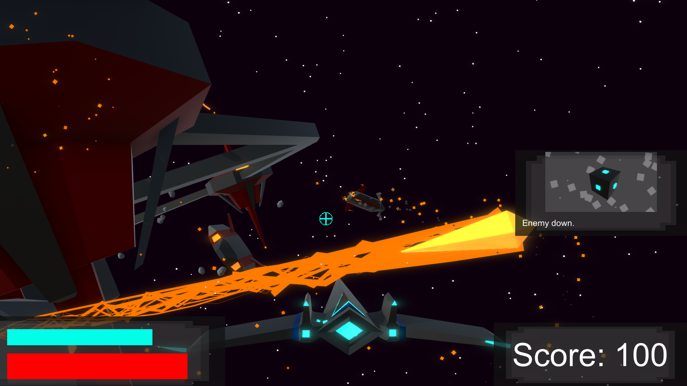
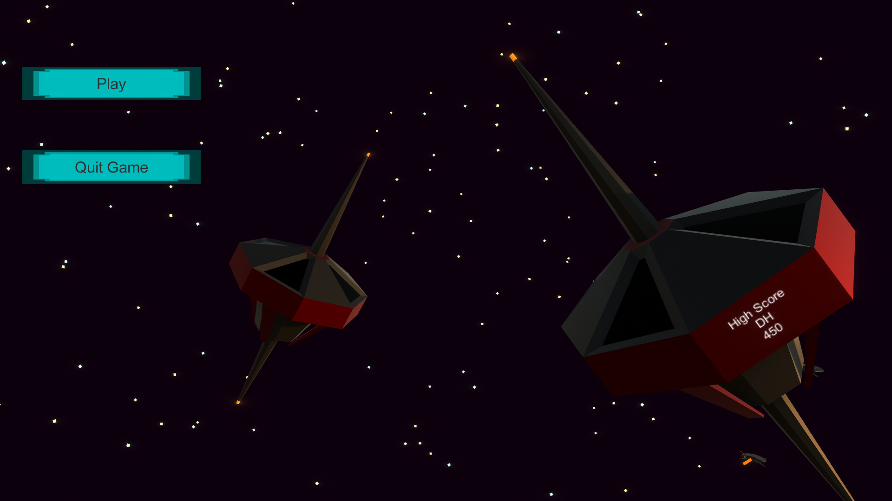
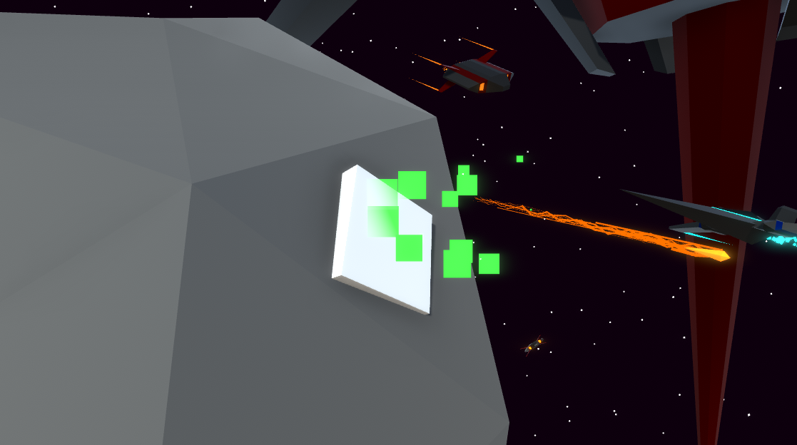
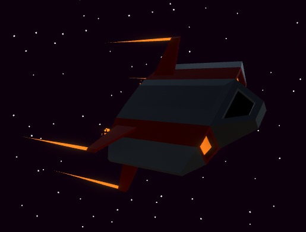

Space Battle Arena
My graduation project at the Alfa-College, this solo project is an arcade space shooter where the player needs to survive as long as possible and destroy waves of enemy ships to gain score.
My graduation project at the Alfa-College, this solo project is an arcade space shooter where the player needs to survive as long as possible and destroy waves of enemy ships to gain score.
The game takes place around a space station, the structure and other debris floating nearby provide cover for the player.
The goal is to get a high score: Points are earned by destroying enemy ships, and the game ends when the player is destroyed.

In combat with enemies.

The main menu, the player with the highest score is displayed here.
The player can take a few hits without being completely destroyed: any damage that the player takes will first be absorbed by the player's shield, this shield is indicated in the UI as a blue health bar.
Shields are restored automatically, it will start to recharge if the player hasn't taken any damage for a few seconds.
When the shield bar reaches 0, any further damage taken will reduce the player's true health that is indicated as the red health bar. The game is over when the player's health reaches 0, Health can be restored by finding an active healstation somewhere within the arena.

An active heal station, players need to get close to heal their health.
There are multiple healing stations around the arena, but only 2 of them are active at a time.
A healing station deactivates when it is used by the player, the HealStationManager script below then picks a random inactive healstation to activate.
This can make it somewhat difficult to heal, as the player will need to check the different healing stations to find an active one.
using System.Collections;
using System.Collections.Generic;
using UnityEngine;
public class HealStationManager : MonoBehaviour {
[SerializeField]
int ActiveAmount;
[SerializeField]
List HealStations = new List();
List Actives = new List();
List InActives = new List();
// Use this for initialization
void Start () {
Getstations();
SetManager();
}
public void Getstations()
{
Actives.Clear();
InActives.Clear();
foreach (HealStation station in HealStations)
{
if (station.Active == true)
{
Actives.Add(station);
}else if (station.Skip == false)
{
InActives.Add(station);
}
}
if (Actives.Count < ActiveAmount)
{
PickNew();
}
ResetSkippables();
}
void PickNew()
{
int RandomStation = Random.Range(0, InActives.Count);
HealStation pickedStation = InActives[RandomStation];
pickedStation.ToggleActive();
Getstations();
}
void ResetSkippables()
{
foreach (HealStation station in HealStations)
{
station.Skip = false;
}
}
void SetManager()
{
foreach (HealStation station in HealStations)
{
station.Manager = this;
}
}
}
Enemies use a state machine to track their current behaviour state, the 3 states enemies can have are: Patrol, Attack and Dead.
Enemies will switch to the patrol state to avoid obstacles and start their attack run after a cooldown.
The health, speed, attack cooldown and the distance at which they'll start avoiding danger is randomized when an enemy spawns in, making enemies more or less aggressive, tanky, fast and reckless.

Close-up of an enemy ship, the low-poly style of the environment and ships were inspired by the visuals of Star Fox on Nintendo's SNES.
using System.Collections;
using System.Collections.Generic;
using UnityEngine;
public class Enemy : MonoBehaviour {
Rigidbody rb;
GameObject target;
[SerializeField]
GameObject CollisionParticles;
[SerializeField]
GameObject Bullet;
[SerializeField]
Material EnergyMat; //energy or team color, bullets will use this color
public bool scored = false;
public int health;
int startHealth; //the amount of health the enemy started with, used to visualize damage
[SerializeField]
ParticleSystem dmgState1;
[SerializeField]
ParticleSystem dmgState2;
[SerializeField]
GameObject DeathParticle;
[SerializeField]
List EnergyColors;
Vector3 headingPos;
GameObject LastCollision;
int speed;
int attackCooldown; //frequency at which the enemy attacks
int stoppingDistance; //distance at which the enemy will stop attacking to avoid collision with the player
float AttackTime; //time at which the enemy started attacking
float Firerate = 1.5f;
float Turnrate = 3; //time between each turn
float NextTurn; //time at which enemy turns again;
float NextShot; //time at which enemy shoots again
States State;
public enum States
{
Patrol,
Attack,
Dead,
}
// Use this for initialization
void Awake() {
State = States.Patrol;
rb = GetComponent();
speed = Random.Range(750, 1500);
health = Random.Range(75, 150);
stoppingDistance = Random.Range(8, 16);
attackCooldown = Random.Range(15, 45);
startHealth = health;
EnterPatrolMode();
UpdateEnergy();
}
void EnterAttackMode()
{
State = States.Attack;
NextShot = Time.time + Firerate * 2;
AttackTime = Time.time;
}
void EnterPatrolMode(float CooldownReduction = 0)
{
State = States.Patrol;
if (CooldownReduction == 0)
{
Invoke("EnterAttackMode", attackCooldown);
}
else
{
Invoke("EnterAttackMode", attackCooldown / CooldownReduction);
}
}
void GetRandomRot()
{
headingPos = Random.rotation * Vector3.forward * 500;
}
// Update is called once per frame
void Update() {
if (State != States.Dead)
{
if (State == States.Attack && NextShot < Time.time)
{
NextShot = Time.time + Firerate;
Shoot();
}
if (State == States.Patrol)
{
RotateToPosition(headingPos, 0.0001f);
if (NextTurn < Time.time)
{
NextTurn = Time.time + Turnrate;
GetRandomRot();
}
}
//forward
rb.AddForce(this.transform.TransformDirection(Vector3.forward * speed) * Time.deltaTime, ForceMode.Force);
RaycastHit hit;
//if (Physics.Raycast(transform.position, transform.TransformDirection(Vector3.forward), out hit) && Vector3.Distance(hit.collider.ClosestPoint(transform.position), transform.position) < 8 || rotating == true && hit.collider != null)
if (Physics.SphereCast(transform.position, 3, transform.TransformDirection(Vector3.forward), out hit, 18) && Vector3.Distance(hit.point, transform.position) < 8) //collider.ClosestPoint(transform.position)
{
RotateToPosition(hit.normal, 0.1f);
if (hit.transform.root.gameObject.tag == "player" && State == States.Attack && Vector3.Distance(transform.position, target.transform.position) <= stoppingDistance || AttackTime < 10)
{
EnterPatrolMode();
}else if (State == States.Attack && hit.transform.root.tag != "player")
{
EnterPatrolMode(10);
}
} else if (hit.collider == null && target != null && State == States.Attack || Vector3.Distance(hit.point, transform.position) > 8 && target != null && State == States.Attack)
{
RotateToPosition(target.transform.position - transform.position, 0.1f);
}
}
}
void OnCollisionEnter(Collision collision)
{
LastCollision = collision.gameObject;
Damage(Mathf.RoundToInt(collision.relativeVelocity.magnitude * 5));
rb.AddForce(-(collision.contacts[0].point - transform.position) * 2, ForceMode.Impulse);
GameObject ColParticles = Instantiate(CollisionParticles);
ColParticles.transform.position = collision.contacts[0].point;
if (LastCollision == target.GetComponent().LastCollision && !scored && health <= 0)
{
target.GetComponent().AddScore(100);
GameObject.FindWithTag("DialogueManager").GetComponent().AddDialogue("That's one way to use that debris I suppose.");
scored = true;
}
if (collision.gameObject.GetComponent())
{
collision.gameObject.GetComponent().AddForce((collision.contacts[0].point - transform.position) * 8, ForceMode.Impulse);
}
}
void RotateToPosition(Vector3 targetDelta, float Rotationspeed = 0.1f)
{
//Vector3 targetDelta = target.position - transform.position;
float angleDiff = Vector3.Angle(transform.forward, targetDelta);
Vector3 cross = Vector3.Cross(transform.forward, targetDelta);
//apply torque
rb.AddTorque(cross * angleDiff * Rotationspeed);
rb.AddTorque(Vector3.Cross(transform.right, transform.right) * Vector3.Angle(transform.right, transform.right) * Rotationspeed * 4);
}
public void Damage(int amount)
{
health -= amount;
if (health <= startHealth / 2)
{
dmgState1.Play();
}
if (health <= startHealth / 4)
{
dmgState2.Play();
}
if (health <= 0)
{
Die();
}
}
void Die()
{
if (State != States.Dead)
{
State = States.Dead;
CancelInvoke("EnterAttackMode");
rb.drag = 0.5f;
rb.angularDrag = 0;
rb.AddRelativeTorque(0, 0, Random.Range(-10, 10));
Invoke("Explode", 5);
}
}
void Explode()
{
GameObject particle = Instantiate(DeathParticle);
GetComponent().Play();
particle.transform.position = this.transform.position;
dmgState1.gameObject.transform.SetParent(particle.transform, true);
dmgState1.Stop();
dmgState2.gameObject.transform.SetParent(particle.transform, true);
dmgState2.Stop();
Destroy(this.gameObject, 1);
foreach (Transform child in this.gameObject.transform)
{
child.gameObject.SetActive(false);
}
}
void Shoot()
{
GameObject BulletClone = Instantiate(Bullet);
BulletClone.GetComponent().material = EnergyMat;
BulletClone.transform.position = transform.position;
BulletClone.transform.rotation = transform.rotation;
if (target.GetComponent() != null)
{
BulletClone.transform.LookAt(target.transform.position + target.GetComponent().velocity);
}
else
{
BulletClone.transform.LookAt(target.transform.position + target.transform.forward * 4);
}
BulletClone.GetComponent().AddRelativeForce(BulletClone.transform.forward * 40, ForceMode.VelocityChange);
}
public void SetTarget(GameObject trgt)
{
target = trgt;
}
void UpdateEnergy()
{
foreach (GameObject energy in EnergyColors)
{
if (energy.GetComponent())
energy.GetComponent().material = EnergyMat;
if (energy.GetComponentInChildren())
energy.GetComponentInChildren().material = EnergyMat;
if (energy.GetComponentInChildren())
energy.GetComponentInChildren().material = EnergyMat;
if (energy.GetComponentInChildren())
{
ParticleSystem.MainModule main = energy.GetComponentInChildren().main;
main.startColor = EnergyMat.color;
}
}
}
}